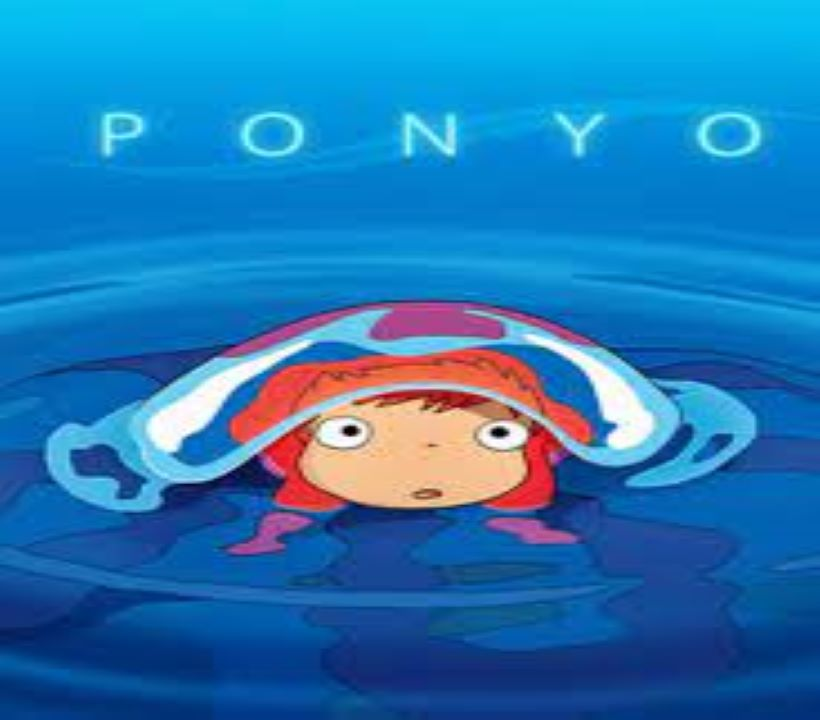

Feel Good Movies
IT'S TIME TO POP THE CORN !

PONYO

OCEAN WAVES

Animation Films
During a forbidden excursion to see the surface world, a goldfish princess encounters a human boy named Sosuke, who gives her the name Ponyo.Ponyo longs to become human, and as her friendship with Sosuke grows, she becomes more humanlike.Ponyo's father brings her back to their ocean kingdom, but so strong is Ponyo's wish to live on the surface that she breaks free, and in the process, spills a collection of magical elixirs that endanger Sosuke's village.
As he journeys back from Tokyo to his high school for a reunion, Taku Morisaki recounts his memories of his school days, focussing in particular on a love triangle that developed between him and two of his friends.
A devastating meditation on the human cost of war, this animated tale follows Seita (Tsutomu Tatsumi), a teenager charged with the care of his younger sister, Setsuko (Ayano Shiraishi), after an American firebombing during World War II separates the two children from their parents. Their tale of survival is as heartbreaking as it is true to life. The siblings rely completely on each other and struggle against all odds to stay together and stay alive.
IT'S TIME TO POP THE CORN !
Japanese Drama Animated
Arrietty, a tiny teenager, lives with her parents in the recesses of a suburban home, unbeknown to the homeowner and housekeeper. Like others of her kind, Arrietty remains hidden from her human hosts, but occasionally ventures forth from beneath the floorboards to borrow sugar cubes and other supplies. A secret friendship forms when 12-year-old Shawn meets Arrietty, but their relationship could spell danger for Arrietty's family.

Based on the manga with the same title, this animated film follows Shizuku, an inquisitive young girl and a voracious reader, who longs to be a writer when she grows up. One day she notices that all of her library books have previously been taken out by one Seiji Amasawa. Amid chasing after a large cat, befriending an eccentric antiques dealer and writing her first novel, Shizuku aims to find this mysterious boy who may well be her soul mate.
This acclaimed animated tale by director Hayao Miyazaki follows schoolgirl Satsuke and her younger sister, Mei, as they settle into an old country house with their father and wait for their mother to recover from an illness in an area hospital. As the sisters explore their new home, they encounter and befriend playful spirits in their house and the nearby forest, most notably the massive cuddly creature known as Totoro.